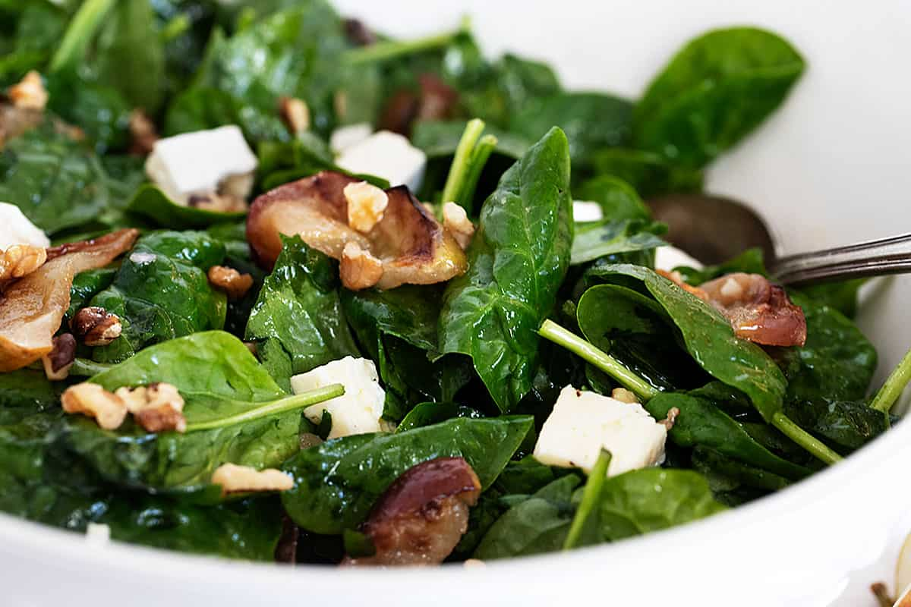

A delicious warm spinach salad, with maple roasted apples, Brie cheese, nuts and optional bacon, tossed in a warm apple cider and mustard dressing. A perfect Fall salad!
Jump to:
- Why you'll love this warm spinach salad recipe
- Key Ingredient
- Is everything better with bacon?
- 4 easy ways to toast nuts
- Step-by-Step Photos
- Making ahead and storing
- Top Tip
- Get the Recipe: Warm Spinach Salad with Apple and Brie
- Save or share this recipe
Why you’ll love this warm spinach salad recipe
Cooler weather calls for warmer salads and this warm spinach salad fits the bill perfectly. The maple roasted apples in this salad make it a perfect Fall salad, that would be great as an everyday side dish (try it with grilled chicken or pork chops!), but also special enough for the Thanksgiving table.
This spinach salad is dressed with a warm apple cider, apple cider vinegar and mustard dressing, with just a bit of garlic. The apple slices are brushed with maple syrup before being roasted and toasted pecans (or walnuts) and chunks of Brie cheese, round out this salad.
Key Ingredients
Spinach - baby spinach works best here. Some people like to remove the stems and you can certainly do that if you like. I rarely bother, myself.
Apples - Granny Smith apples work well here as they hold their shape well. I tend to prefer a red apple and even though they tend to get a little softer after roasting, I love the colour and flavour. You can go either way, as you like.
Maple Syrup - real maple syrup will give you the best results here, but in a pinch maple-flavoured pancake syrup will bring the maple flavour to the apples, as well.
Brie Cheese - a small round of Brie is all you need for this salad. Camembert would be a good substitute. If neither is available, I think I would look to goat cheese crumbles.
Nuts - use either pecans or walnuts, but either way, it’s well worth the time to toast them for extra flavour in the salad.
Oil - you can use any type of salad oil here, from Extra Virgin Olive Oil to a neutral-tasting cooking oil, such as vegetable or canola. If you are opting to add some bacon to your salad and cooking the bacon fresh, you can use a bit of the bacon’s rendered fat (maybe a Tbsp or so) to replace the oil in the dressing, to bring a bacon flavour to the dressing as well).
Apple Cider Vinegar - apple cider vinegar continues the “apple” them in the dressing, but if you don’t have apple cider vinegar on hand, white or white wine vinegar is good substitute.
Apple Cider or Apple Juice - fresh apple cider will offer the best flavour, but regular apple juice is fine, as well.
Is everything better with bacon?
This salad is delicious with or without bacon, so if you need to keep it vegetarian or you just don’t feel like frying up bacon, rest assured that you will still have a great salad. That said, some crumbled, cooked bacon would be right at home in this warm spinach salad! Or kick it up a notch and go for cooked, diced pancetta.
4 easy ways to toast nuts
Microwave - simply scatter the nuts onto a microwave-safe plate and cook in the microwave in 30-second bursts, stirring between, until fragrant and toasted. Remove from plate to prevent further cooking.
Dry Skillet - scatter nuts into a dry, non-stick skillet and cook over medium heat, stirring, until fragrant and golden.
Oven - scatter nuts onto a dry baking sheet and place into a preheated 350F oven. Cook, stirring, until fragrant and golden, 4-5 minutes.
Air Fryer - yes, you can toast nuts in an air fryer! Of course, this assumes your air fryer basket doesn’t have holes too big that the nuts might fall through. Otherwise, simply set your air fryer to 300F and air fry for 4-5 minutes, shaking the basket halfway through.
Step-by-Step Photos
Making ahead and storing
You can make the toasted nuts ahead and store in an airtight container. You can also dice the Brie cheese ahead and refrigerate separately until assembling the salad.
The roasted apples can also be made ahead, if necessary, though they are probably at their best fresh and still a little warm. If making ahead, store at room temperature until you assemble the salad, so at least they aren’t cold.
You can mix up the salad dressing ahead, then re-warm just before mixing the salad. Refrigerate until needed.
Assemble the salad just before serving, so that it is warm on the table and the spinach doesn’t get soggy.
Top Tip
This salad has tangy apple/mustard dressing, sweet apples and creamy Brie, but to round it all out, it does need a salty element. If you opt for the bacon addition, you’ve got that covered, if not, be sure to salt your salad. I like to salt right after adding the salad dressing.

GET THE RECIPE:
Warm Spinach Salad with Apple and Brie
A lovely warm spinach salad, with maple roasted apples, Brie cheese, toasted nuts and optional crumbled bacon.
Ingredients
- 2-3 apples, 2 if large, 3 if smaller *see Note 1 for types to use
- 2 Tablespoon maple syrup
- 4 cups baby spinach leaves
- 3-4 oz Brie cheese, cut into small pieces
- 1/4 cup walnuts or pecans, toasted *see Note 2
- Bacon, cooked and crumbled (optional)
- Salt and freshly ground pepper
Dressing:
- 2 Tbsp apple cider or apple juice
- 1 1/2 Tablespoon apple cider vinegar
- 1/2 teaspoon Dijon mustard
- 1/4 teaspoon garlic, minced
- 2 Tablespoon oil, extra virgin olive, vegetable, canola *see Note 3
- Salt and freshly ground pepper
Instructions
- Cut the Brie cheese into small pieces and set aside. Toast the walnuts or pecans. (See Note 2 below for how to toast nuts). Set aside.
- Roast the apples: Prepare the apples. You can peel or not, as you like. Cut the apples into quarters, core, then cut into 1/2-inch slices. Arrange the apple slices in a single layer on a baking sheet. Brush with maple syrup. Place the baking pan onto the top rack of the oven and broil until lightly golden. Remove from oven, flip the apples, brush with more maple syrup and return to the oven to broil until the other side of the apples are golden. Remove from oven and set aside. *Watch closely as the apples can easily scorch.
- Prepare the dressing: In either a microwave-proof bowl or measuring cup OR a small saucepan on the stovetop, whisk together the dressing ingredients. Heat in the microwave or on the stove-top over low heat until simmering. Remove from heat or set aside.
- Prepare the salad: Add the spinach to a large bowl. Re-warm the dressing, as needed, then whisk together well right before drizzling over the spinach, using as much as needed to moisten the spinach. Toss the spinach well. Season with a little salt and pepper and re-toss. Add the roasted apples, Brie cheese, toasted nuts and crumbled bacon (if using). Toss well and serve immediately.
Notes
- Apples - Granny Smith apples are a good option, as they hold their shape well when roasted. That said, I prefer a red apple. I like the colour and extra flavour. Opt for a good baking apple, one you might use for a pie, for best results.
- Toasting Nuts - add nuts to a dry, non-stick skillet and cook on the stove-top over medium heat, stirring regularly, until fragrant and golden. *See above the Recipe Card for alternate options for toasting nuts, such as microwave, oven or air fryer methods.
- If you are using bacon and cooking it fresh, save some of the rendered fat from the bacon and use it to replace up to 1 Tbsp of the oil in the dressing.
Be sure to read the information above this Recipe Card, for more tips, substitutions and variations for this recipe.
NUTRITION INFORMATION: calories: 240kcal, carbohydrates: 16g, protein: 7g, fat: 18g, saturated fat: 5g, polyunsaturated fat: 6g, monounsaturated fat: 7g, trans fat: 1g, cholesterol: 21mg, sodium: 166mg, potassium: 343mg, fiber: 3g, sugar: 11g, vitamin a: 2990iu, vitamin c: 13mg, calcium: 83mg, iron: 1mg
Tried this recipe?
Mention @seasonandsupperson Instagram or tag #seasonsandsuppers
Save or share this recipe
published on NOV 9, 20214 COMMENTS
LEAVE A COMMENT
4 comments on “Warm Spinach Salad with Apple and Brie”
CHEYANNE @ NO SPOON NECESSARY — NOVEMBER 9, 2021 @ 7:38 PM
I’m a salad year ‘round kinda girl, so I absolutely love a delicious warm salad during the cooler months. I’m definitely adding this beauty to my line up!! Love the combination of flavors and textures!!
JENNIFER — NOVEMBER 9, 2021 @ 7:54 PM
Thanks so much, Cheyanne!
DAWN — NOVEMBER 9, 2021 @ 9:24 AM
I always, always, have spinach on hand. And brie? Love it so much!! Gotta give this salad a go. Looks just perfect for fall!
JENNIFER — NOVEMBER 9, 2021 @ 9:50 AM
Thanks Dawn and yes, I always think of this salad for Fall meals :)
Leave a reply
Your email address will not be published. Required fields are marked *
Made this recipe? Click on the stars to leave a rating!
Hi, I’m Jennifer!
Are you are looking for simple, seasonal and delicious everyday recipes? Do you love classic, homey, comforting food, but with a modern, real food update? Good! Me, too!